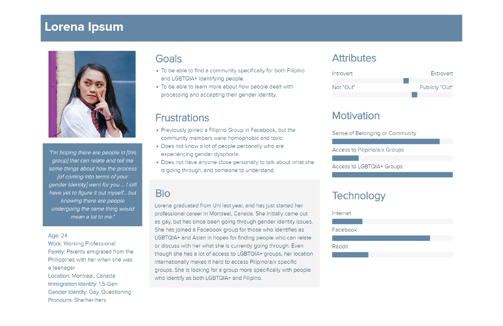
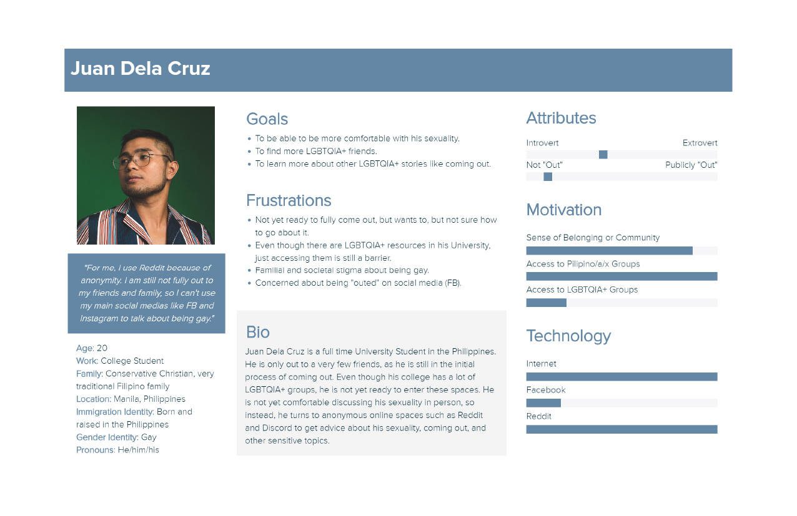
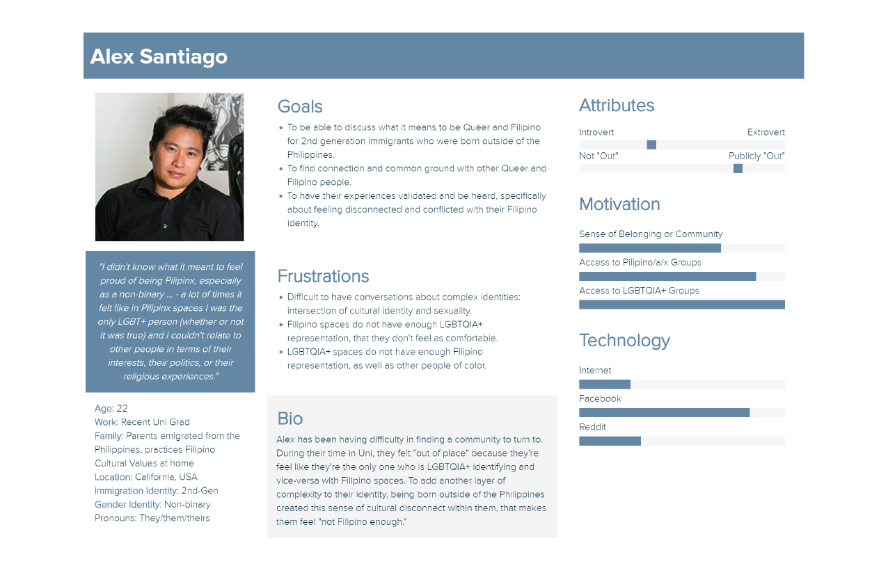

Introduction
For my user research, I went through different platforms for both LGBTQIA+ and Filipino people. In these platforms, people introduce themselves, discuss the personal things that they are going through, ask for advice, and many others. I researched both for platforms where people have their real social media profiles, as well as anonymous forums and messaging boards. After compiling a few narratives, I coded them into 3 primary categories: Personal Identity, Pain Points, Goals/Aspirations.
These 3 personas are then created to capture the different aspects of the target audience that my project, PEN:PALS, is addressing. They widely differ on: geographic location, "out" status, and access to LGBTQIA+ and Filipino resources.
For their "out" status, I operationalized it as a range from 'Not Out' to 'Publicly Out.' 'Not Out' is defined as someone who is not out to anyone at all, and 'Publicly Out' is defined as someone who is out publicly, in public social media, etc. Those who are in between the two spectrum can range from being out to a select few friends, family members, etc.
Hover over the images to zoom in.
  Sources
Persona Templates Courtesy of xtensio.com
"Juan Dela Cruz" - Photo by Dale Alejandro on Unsplash
"Lorena Ipsum" - Photo by Toa Heftiba on Unsplash
"Alex Santiago" - Photo by Mapbox on Flickr